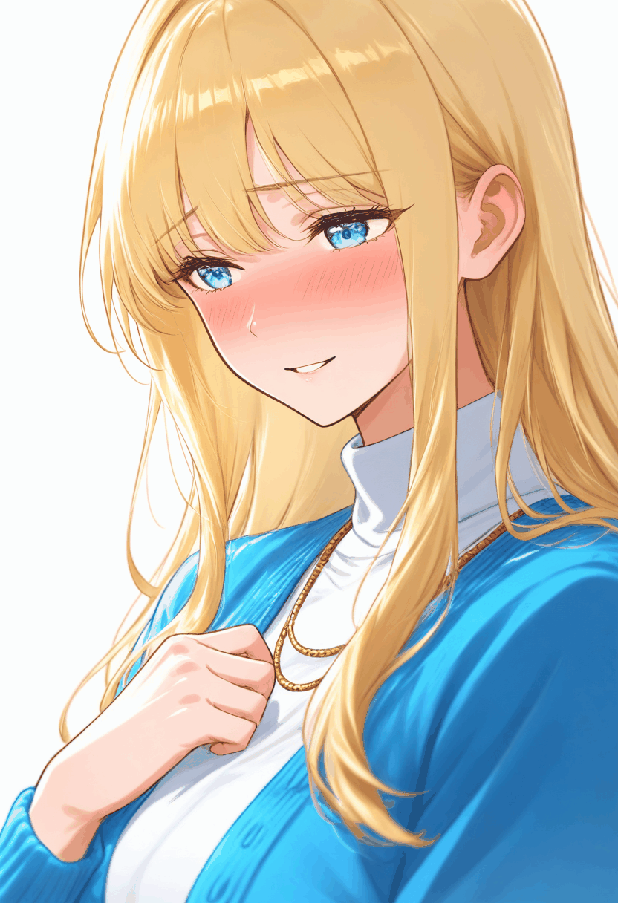

①まばたき

目を閉じる短い2段階の差分。体・口・背景は固定。
GIFを開く・保存②小さな呼吸
衣服の一部を最大3.2px動かした2D試作。体全体の自然な呼吸は未検証。
GIFを開く・保存③恋愛表情の変化
照れた微笑みから笑顔へ。口元の差分を短くフェードし、目・体は固定。
GIFを開く・保存同じ原画から3種類。顔・体の位置は固定し、各GIFの必要領域だけ変更。GIFは256色のため原寸PNGとは色差があります。下の画像は繰り返し再生します。

目を閉じる短い2段階の差分。体・口・背景は固定。
GIFを開く・保存衣服の一部を最大3.2px動かした2D試作。体全体の自然な呼吸は未検証。
GIFを開く・保存照れた微笑みから笑顔へ。口元の差分を短くフェードし、目・体は固定。
GIFを開く・保存